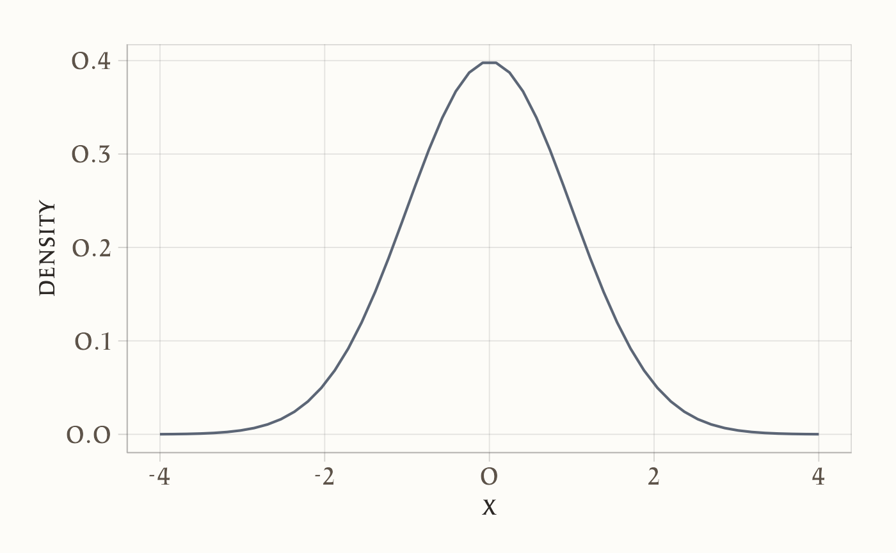
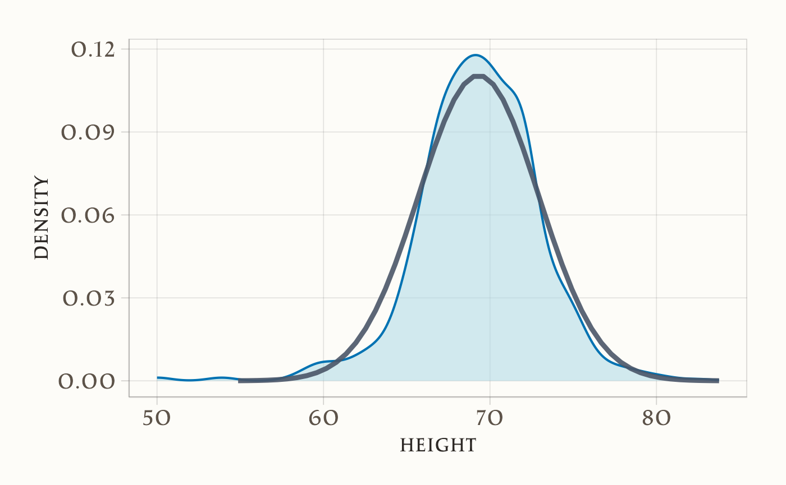
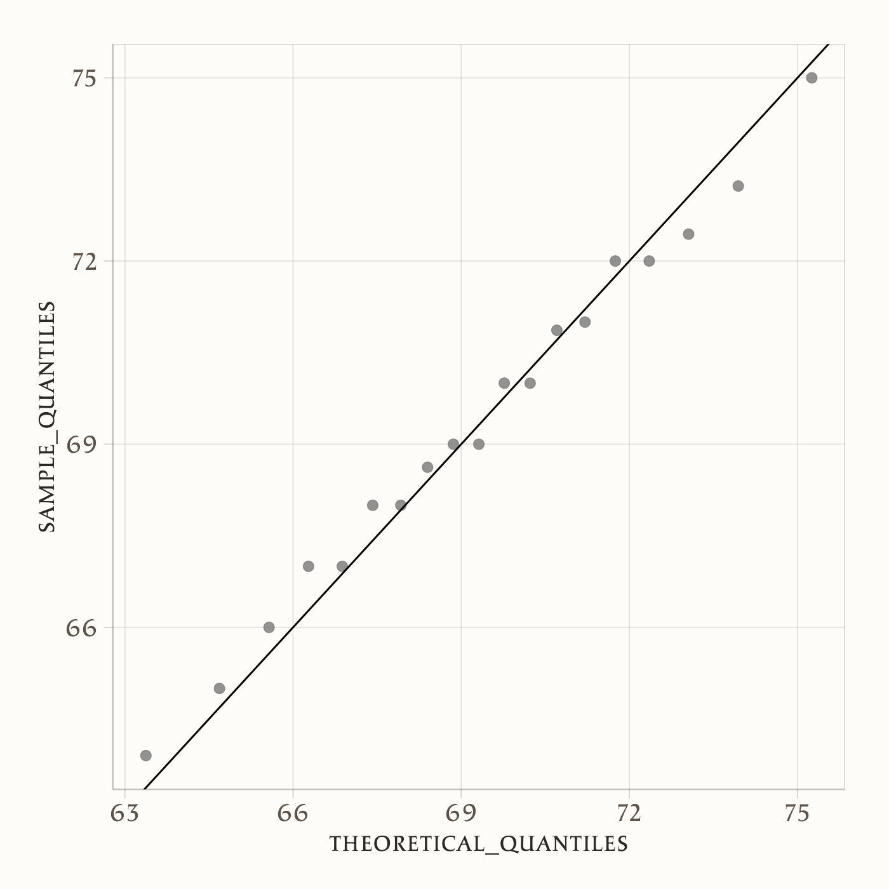
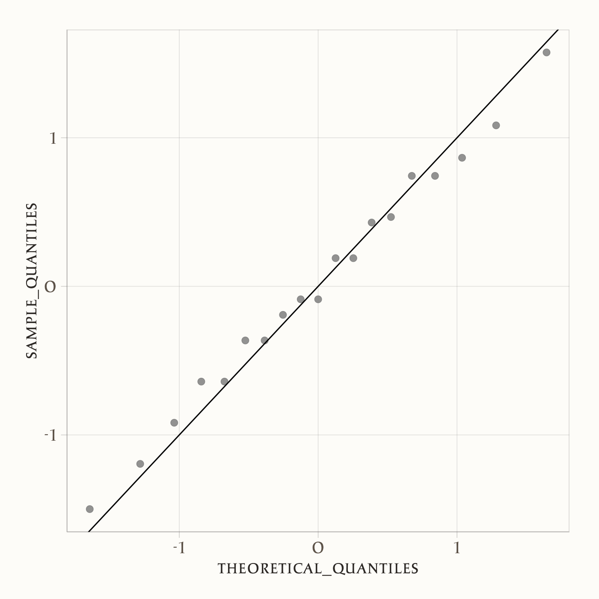
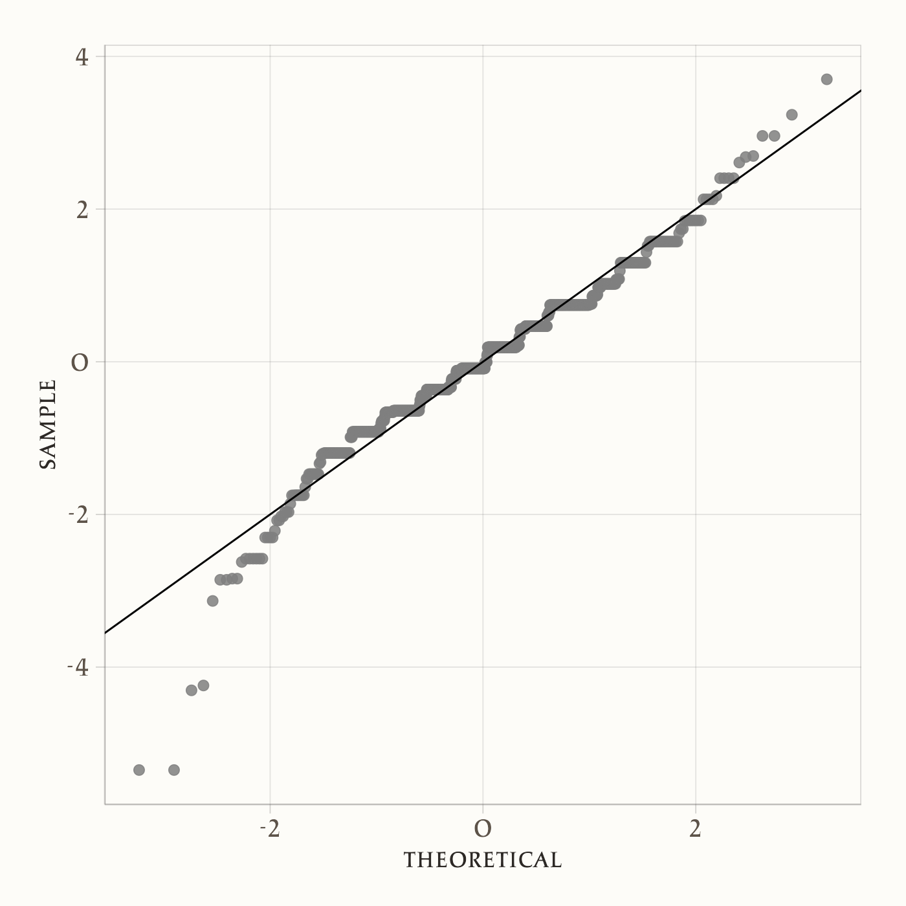
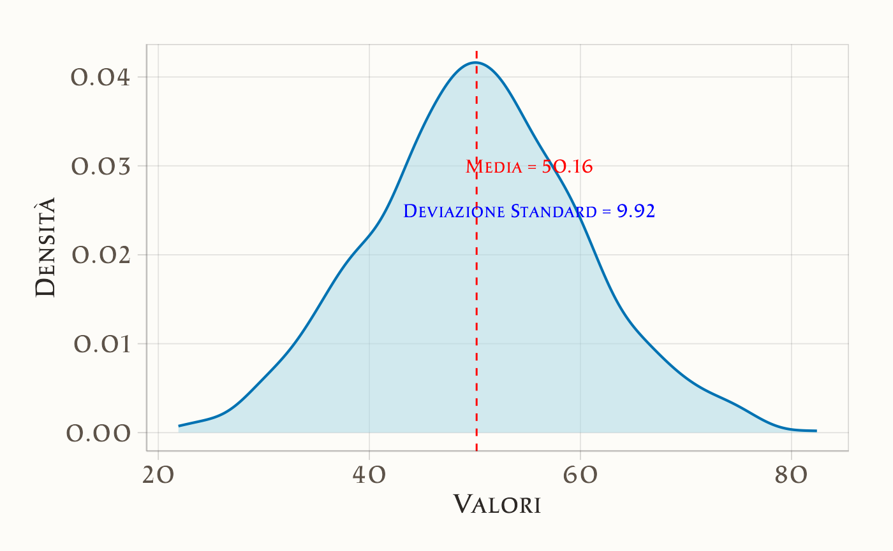
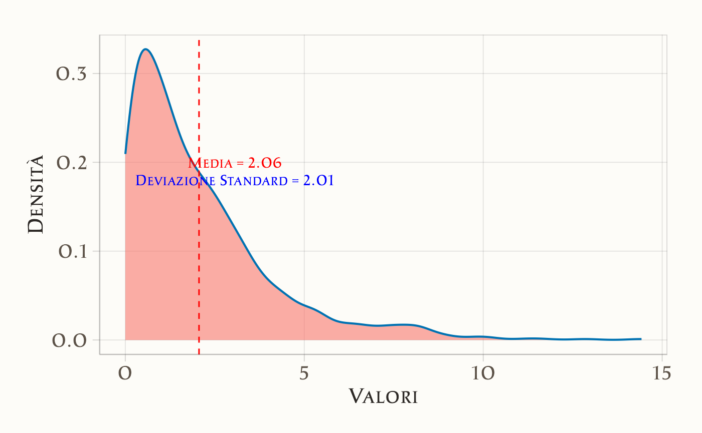

here::here("code", "_common.R") |>
source()
# Load packages
if (!requireNamespace("pacman")) install.packages("pacman")
pacman::p_load(ggbeeswarm, dslabs, gridExtra)20 Introduzione alla distribuzione normale
“L’uomo normale è un’astrazione che non esiste in pratica, una finzione legale, e la curva normale è una cosa altrettanto irreale.”
– Otto Neurath, Filosofo ed economista
Introduzione
In questo capitolo forniremo un primo sguardo alla distribuzione normale, che sarà trattata in modo più approfondito nel ?sec-prob-cont-prob-distr. Introduciamo la distribuzione normale a questo punto poiché essa spiega in modo chiaro perché, in molte analisi, media e deviazione standard siano impiegate come principali descrittori di una distribuzione.
Panoramica del capitolo
- Che cos’è la distribuzione normale?
- Come si costruisce e come si interpreta la distribuzione normale normalizzata.
- Cosa sono e come si interpretanto i diagrammi quantile-quantile.
- Distribuzione normale e statistiche descrittive.
::: {.callout-caution collapse=true=“Preparazione del Notebook”}
:::
20.1 La distribuzione normale
Nel Capitolo 17, abbiamo visto come gli istogrammi e i grafici di densità forniscano utili riassunti visivi di una distribuzione. In questo capitolo, ci chiediamo se sia possibile riassumere una distribuzione in modo ancora più sintetico. Spesso si fa riferimento a media e deviazione standard come statistiche riassuntive fondamentali: in sostanza, un riassunto in due numeri. Per comprendere appieno il ruolo di questi valori, dobbiamo prima capire come è definita la distribuzione normale.
La distribuzione normale, nota anche come curva a campana o distribuzione gaussiana, è uno dei concetti matematici più conosciuti (si veda il ?sec-prob-cont-prob-distr). Uno dei motivi della sua fama è che numerose variabili nella realtà seguono, almeno approssimativamente, una distribuzione normale. Esempi includono le vincite nel gioco d’azzardo, l’altezza e il peso delle persone, la pressione sanguigna, i punteggi di alcuni test standardizzati e gli errori di misura negli esperimenti. I motivi matematici e probabilistici di queste approssimazioni verranno discussi in seguito; qui ci concentreremo sul come la distribuzione normale aiuti a riassumere i dati.
Anziché partire da dati empirici, la distribuzione normale si definisce tramite una formula matematica. Per un intervallo generico \((a,b)\), la proporzione di valori che cade in tale intervallo si ottiene mediante:
\[ \text{Pr}(a < x \leq b) \;=\; \int_a^b \frac{1}{\sqrt{2\pi}\,\sigma} \, e^{-\tfrac12\,\bigl(\tfrac{x - \mu}{\sigma}\bigr)^2}\, dx . \tag{20.1}\]
Non è necessario memorizzare o padroneggiare i dettagli di questa formula, ma è importante sapere che la distribuzione normale è completamente determinata da due soli parametri: \(\mu\) e \(\sigma\). Gli altri simboli nella formula (\(\pi\), \(e\), \(a\), \(b\)) rappresentano costanti matematiche o gli estremi dell’intervallo. In particolare, \(\mu\) è il valore medio (o media) e \(\sigma\) è la deviazione standard.
Questa distribuzione è simmetrica, centrata sulla media \(\mu\), e la maggior parte dei valori (circa il 95%) si trova entro 2 deviazioni standard dalla media, cioè nell’intervallo \(\mu \pm 2\sigma\). Ecco un esempio di come appare la distribuzione normale quando \(\mu = 0\) e \(\sigma = 1\):
m <- 0; s <- 1
norm_dist <- tibble(x = seq(-4, 4, length.out = 50)*s + m) |>
mutate(density = dnorm(x, m, s))
norm_dist |>
ggplot(aes(x, density)) + geom_line()
Il fatto che la distribuzione sia descritta da due parametri implica che, se un insieme di dati reali si approssima bene a una distribuzione normale, due soli numeri (media e deviazione standard) possono fornire un riassunto sintetico della distribuzione. Vediamo ora come si calcolano, in pratica, questi due parametri per una lista di valori arbitraria.
Supponiamo di avere un vettore x che contiene una serie di valori numerici. Abbiamo visto come, in R, la media si trova come:
e la deviazione standard è:
La deviazione standard si può interpretare come la distanza media dei valori dalla loro media.
20.1.1 Un esempio pratico
Per calcolare media e deviazione standard dell’altezza maschile in un dataset, ipotizziamo che il vettore heights$height contenga le altezze di alcuni individui, mentre heights$sex contenga il genere corrispondente. Se vogliamo estrarre solo i valori relativi ai maschi, possiamo scrivere:
index <- heights$sex == "Male"
x <- heights$height[index]Quindi usiamo le funzioni predefinite di R:
Possiamo ora mettere a confronto la curva di densità osservata dei dati (in blu) con quella teorica (in nero) della distribuzione normale con media e deviazione standard stimate:
norm_dist <- tibble(
x = seq(-4, 4, length.out = 50)*s + m) |>
mutate(density = dnorm(x, m, s))
heights |>
dplyr::filter(sex == "Male") |>
ggplot(aes(height)) +
geom_density(fill = "lightblue") +
geom_line(aes(x, density), linewidth=1.5, data = norm_dist)
Come si vede, la curva normale fornisce una buona approssimazione per i dati sull’altezza maschile. Vedremo ora come verificare l’aderenza di una distribuzione ai dati, osservando le proporzioni di valori entro intervalli specifici.
20.2 Unità standard
Per i dati che seguono (o quasi) una distribuzione normale, è molto comodo utilizzare le cosiddette unità standard (Standard Units). Un valore \(x\) viene convertito in unità standard tramite la formula:
\[ z = \frac{x - m}{s} , \]
dove \(m\) e \(s\) sono la media e la deviazione standard della distribuzione. Questa trasformazione ci dice di quante deviazioni standard un particolare valore si discosta dalla media. Ad esempio, se \(z=0\), il valore \(x\) corrisponde esattamente alla media; se \(z = 2\), il valore \(x\) si trova a due deviazioni standard sopra la media; se \(z = -2\), a due deviazioni standard sotto la media, e così via.
In R, possiamo calcolare le unità standard con la funzione:
z <- scale(x) |> as.numeric()
head(z)
#> [1] 1.574 0.190 -0.364 1.297 -2.303 -0.641Se vogliamo sapere, ad esempio, quale frazione di individui si trova entro 2 deviazioni standard dalla media (cioè \(|z| < 2\)), basta scrivere:
Vedremo, in molti casi, un valore intorno al 95%, in linea con quanto previsto dalla distribuzione normale. Per confermare la bontà dell’approssimazione, si usano spesso i grafici quantile-quantile, detti anche qqplot.
20.3 Grafici quantile-quantile
Un modo sistematico per verificare quanto la distribuzione normale descriva bene i dati osservati consiste nel confrontare i quantili empirici con quelli teorici di una normale. Se i due insiemi di quantili sono molto simili, abbiamo un’ulteriore conferma dell’aderenza alla normalità.
- La funzione di ripartizione della distribuzione normale standard si indica spesso con \(\Phi(x)\). Ad esempio, \(\Phi(-1.96) \approx 0.025\) e \(\Phi(1.96) \approx 0.975\).
- L’inversa di \(\Phi\), indicata come \(\Phi^{-1}(p)\), ci dà il quantile corrispondente a una determinata probabilità \(p\). In R,
pnormcalcola \(\Phi(x)\) eqnormcalcola \(\Phi^{-1}(p)\). Di default,pnormeqnormsi riferiscono alla normale standard (media 0, deviazione standard 1), ma possiamo specificare valori diversi di media e deviazione standard tramite gli argomentimeanesd.
Per ottenere il quantile empirico da un vettore di dati in R, possiamo usare la funzione quantile. Ad esempio, se abbiamo un vettore x, il quantile associato alla probabilità \(p\) è il valore \(q\) per il quale mean(x <= q) = p.
Ecco lo schema logico per costruire un qqplot:
- Definiamo un vettore di proporzioni \(p_1, p_2, \dots, p_m\).
- Calcoliamo i relativi quantili empirici dei nostri dati \(\{q_1, \dots, q_m\}\) usando
quantile(x, p_i).
- Calcoliamo i quantili teorici della normale (con la stessa media e la stessa deviazione standard dei dati) usando
qnorm(p_i, mean, sd).
- Rappresentiamo i punti \((\text{quantile teorico}, \text{quantile empirico})\). Se i dati sono davvero normali, tali punti si disporranno approssimativamente lungo la retta diagonale
y = x.
Esempio in R:
p <- seq(0.05, 0.95, 0.05)
sample_quantiles <- quantile(x, p)
theoretical_quantiles <- qnorm(p, mean = mean(x), sd = sd(x))
qplot(theoretical_quantiles, sample_quantiles) + geom_abline()
Se però abbiamo già convertito in unità standard (quindi \(\mu = 0\) e \(\sigma = 1\)), il confronto si semplifica:
sample_quantiles <- quantile(z, p)
theoretical_quantiles <- qnorm(p)
qplot(theoretical_quantiles, sample_quantiles) + geom_abline()
In pratica, per creare rapidamente un qqplot si usa spesso ggplot2 con la geometria geom_qq:

Come abbiamo sottolineato, se i punti nel qqplot si dispongono lungo una retta, significa che la distribuzione dei dati è in accordo con la distribuzione teorica considerata (in questo caso, la normale). I qqplot possono essere usati anche per confrontare qualsiasi coppia di distribuzioni, non solo dati e normale teorica.
Questo indica che l’approssimazione normale è accurata per il gruppo maschile (nel nostro dataset).
20.4 Media e deviazione standard come statistiche descrittive della distribuzione
La media e la deviazione standard sono due delle statistiche più comunemente utilizzate per descrivere la distribuzione di un insieme di dati. Queste misure sono particolarmente utili quando i dati seguono una distribuzione normale. In questo caso, la media e la deviazione standard contengono tutte le informazioni necessarie per caratterizzare completamente la forma della distribuzione.
20.4.1 Distribuzione normale e statistiche descrittive
La distribuzione normale è definita dalla sua media (\(\mu\)) e dalla sua deviazione standard (\(\sigma\)). La formula della densità di probabilità della distribuzione normale è data dall’Equazione 20.1. Questa formula mostra che, conoscendo solo \(\mu\) e \(\sigma\), possiamo ricostruire l’intera curva di densità. Pertanto, se i dati empirici sono ben approssimati da una distribuzione normale, la media e la deviazione standard sono sufficienti per descrivere la distribuzione.
Supponiamo di avere un dataset che segue una distribuzione normale con media 50 e deviazione standard 10. Possiamo generare dati casuali e visualizzare la curva di densità in R:
# Generiamo dati da una distribuzione normale
set.seed(123)
dati <- rnorm(1000, mean = 50, sd = 10)
# Calcoliamo media e deviazione standard
media <- mean(dati)
deviazione_standard <- sd(dati)
# Visualizziamo la curva di densità
ggplot(data.frame(dati), aes(x = dati)) +
geom_density(fill = "lightblue") +
geom_vline(xintercept = media, color = "red", linetype = "dashed") +
labs(
x = "Valori",
y = "Densità") +
annotate("text", x = media + 5, y = 0.03, label = paste("Media =", round(media, 2)), color = "red") +
annotate("text", x = media + 5, y = 0.025, label = paste("Deviazione Standard =", round(deviazione_standard, 2)), color = "blue")
In questo esempio:
- La curva di densità è centrata attorno alla media (\(\mu = 50\)).
- La deviazione standard (\(\sigma = 10\)) determina la dispersione dei dati attorno alla media.
20.4.2 Quando media e deviazione standard non sono sufficienti
Sebbene media e deviazione standard siano strumenti estremamente utili per descrivere distribuzioni normali, non sempre bastano a cogliere tutte le caratteristiche di un insieme di dati. In particolare, ci sono situazioni in cui la forma della distribuzione rende necessario ricorrere a misure aggiuntive. Di seguito presentiamo alcuni casi tipici.
-
Distribuzioni Asimmetriche
Una distribuzione si dice asimmetrica (o skewed) quando una coda è più “estesa” dell’altra.- Se la coda più lunga è a destra, la distribuzione è asimmetrica positiva (o a destra).
- Se la coda più lunga è a sinistra, la distribuzione è asimmetrica negativa (o a sinistra).
In queste circostanze, la media tende a spostarsi verso la coda più lunga, mentre la mediana rimane più stabile e rappresentativa del valore centrale.
- Se la coda più lunga è a destra, la distribuzione è asimmetrica positiva (o a destra).
Distribuzioni Multimodali
Una distribuzione è multimodale quando presenta più picchi (o “modi”). Ciò significa che i dati si concentrano attorno a più di un valore, formando veri e propri sotto-gruppi. In questi casi, media e deviazione standard possono risultare poco significative, poiché non colgono la presenza di più poli di concentrazione.-
Kurtosi
La kurtosi descrive quanto una distribuzione sia “appuntita” o “piatta” rispetto a una normale.-
Alta kurtosi indica picchi molto accentuati e code più lunghe, con una maggiore probabilità di valori estremi.
- Bassa kurtosi segnala una forma più appiattita, con code ridotte e meno outlier.
-
Alta kurtosi indica picchi molto accentuati e code più lunghe, con una maggiore probabilità di valori estremi.
Quando le distribuzioni mostrano una di queste peculiarità, altre statistiche possono rivelarsi più informative:
- La mediana, insensibile ai valori estremi, fornisce una descrizione più robusta del centro.
- I quartili, e in particolare l’intervallo interquartile, danno un’idea della dispersione principale trascurando le code.
- L’indice di asimmetria (skewness) misura il grado di sbilanciamento della distribuzione.
- L’indice di curtosi (kurtosis) quantifica la “pesantezza” delle code.
Nel seguente esempio, generiamo dati da una distribuzione esponenziale, notoriamente asimmetrica:
# Generiamo dati da una distribuzione esponenziale
set.seed(123)
dati_esponenziali <- rexp(1000, rate = 0.5)
# Calcoliamo media e deviazione standard
media_esp <- mean(dati_esponenziali)
deviazione_standard_esp <- sd(dati_esponenziali)
# Visualizziamo la curva di densità
ggplot(data.frame(dati_esponenziali), aes(x = dati_esponenziali)) +
geom_density(fill = "#F8766D", alpha = 0.6) +
geom_vline(xintercept = media_esp, color = "red", linetype = "dashed") +
labs(
x = "Valori",
y = "Densità") +
annotate("text", x = media_esp + 1, y = 0.2,
label = paste("Media =", round(media_esp, 2)),
color = "red") +
annotate("text", x = media_esp + 1, y = 0.18,
label = paste("Deviazione Standard =", round(deviazione_standard_esp, 2)),
color = "blue")
L’istogramma (o la densità) mostra chiaramente una coda lunga a destra, con molti valori piccoli e pochi valori grandi. In questo contesto:
- La media tende a seguire la coda, diventando meno rappresentativa del “centro”.
- La deviazione standard non descrive in modo efficace la variabilità, perché non considera adeguatamente la forte asimmetria.
Misure alternative, come la mediana e i quartili, forniscono informazioni più affidabili:
# Calcoliamo mediana e quartili
mediana <- median(dati_esponenziali)
quartili <- quantile(dati_esponenziali, probs = c(0.25, 0.75))
cat("Mediana:", mediana, "\n")
#> Mediana: 1.46
cat("Primo Quartile (Q1):", quartili[1], "\n")
#> Primo Quartile (Q1): 0.613
cat("Terzo Quartile (Q3):", quartili[2], "\n")
#> Terzo Quartile (Q3): 2.85In conclusione, quando i dati non presentano una forma vicina alla normalità (ad esempio perché asimmetrici, multimodali o con kurtosi anomala), media e deviazione standard possono risultare fuorvianti o poco utili. In questi casi, è fondamentale adottare misure alternative o complementari (mediana, quartili, skewness, kurtosis) per ottenere una descrizione più accurata della distribuzione.
Riflessioni conclusive
In questo capitolo, abbiamo esplorato alcuni concetti fondamentali per l’analisi dei dati e consolidato le basi per un’interpretazione più approfondita delle distribuzioni. In particolare, abbiamo:
- Studiato la distribuzione normale, una delle distribuzioni più importanti in statistica, e compreso perché la media e la deviazione standard siano parametri cruciali per descriverla. Questi indicatori ci permettono di riassumere in modo efficace le caratteristiche centrali e la variabilità dei dati.
- Imparato a standardizzare i dati convertendoli in unità standard (z-score), il che ci consente di confrontare variabili con scale diverse o di valutare quanto un dato specifico si discosti dalla media in termini di deviazioni standard.
- Introdotto il grafico quantile-quantile (QQ-plot), uno strumento visivo prezioso per verificare se i nostri dati seguono una distribuzione normale. Attraverso il QQ-plot, possiamo confrontare i quantili empirici dei nostri dati con quelli teorici della distribuzione normale, identificando eventuali deviazioni.
Gli strumenti descritti in questo capitolo rappresentano il primo passo essenziale nell’analisi esplorativa dei dati. Essi ci aiutano a formulare ipotesi solide e a riconoscere potenziali problemi o caratteristiche peculiari dei dati prima di applicare metodi statistici più avanzati, che approfondiremo nei prossimi capitoli.
L’analisi esplorativa, combinando grafici intuitivi e statistiche descrittive appropriate, riveste quindi un ruolo fondamentale nel processo analitico. Essa non solo ci aiuta a comprendere meglio la natura dei dati, ma ci fornisce anche una base solida su cui costruire conclusioni statistiche attendibili e informate.
Esercizi
::: {.callout-tip=“Esercizi” collapse=“true”} Esercizi Teorici
Rispondi alle seguenti domande per consolidare la comprensione teorica della distribuzione normale e dei suoi concetti chiave.
-
Caratteristiche della distribuzione normale
- Quali sono i due parametri principali della distribuzione normale?
- Perché la distribuzione normale è utilizzata così frequentemente in statistica?
- In quali situazioni reali possiamo aspettarci che una variabile segua una distribuzione normale?
- Quali sono i due parametri principali della distribuzione normale?
-
Media e deviazione standard
- Qual è il significato della media in una distribuzione normale?
- Cosa rappresenta la deviazione standard?
- In che modo la deviazione standard influenza la forma della curva normale?
- Qual è il significato della media in una distribuzione normale?
-
Z-score e standardizzazione
- Cos’è uno z-score e come si calcola?
- Qual è il significato di un valore z=2? E di un valore z=-1.5?
- Dopo la standardizzazione, quali saranno la media e la deviazione standard della variabile?
- Cos’è uno z-score e come si calcola?
-
Verifica della normalità
- Se hai un piccolo campione di dati (circa 15 osservazioni), quali metodi grafici puoi utilizzare per valutare se segue una distribuzione normale?
- Quali strumenti statistici puoi impiegare per testare la normalità?
- In un QQ-plot, come puoi riconoscere se i dati seguono una distribuzione normale?
- Se hai un piccolo campione di dati (circa 15 osservazioni), quali metodi grafici puoi utilizzare per valutare se segue una distribuzione normale?
Esercizi Pratici in R
Obiettivo: Analizzare i dati raccolti dagli studenti sulla Satisfaction With Life Scale (SWLS), comprendere la loro distribuzione e confrontarli con una distribuzione normale teorica.
Dati disponibili:
Usa i dati della SWLS. I dati contengono anche informazioni sul genere e su un indice di rete sociale (LSNS).
1. Esplorazione e Visualizzazione dei Dati SWLS
-
Carica i dati raccolti dagli studenti e verifica la struttura del dataset.
-
Calcola i valori di base: media, deviazione standard, minimo, massimo, e quantili della SWLS.
-
Crea una rappresentazione visiva dei dati:
- Istogramma con sovrapposta una curva di densità.
- Boxplot per identificare eventuali outlier.
- Violin plot per osservare la distribuzione.
- Istogramma con sovrapposta una curva di densità.
2. Confronto con la Distribuzione Normale
-
Sovrapponi ai dati osservati una curva normale teorica basata su media e deviazione standard stimate dal campione.
-
Confronta i quantili empirici con quelli teorici mediante un QQ-plot.
- Commenta il risultato: i dati SWLS seguono approssimativamente una normale? Se no, quali differenze noti?
3. Standardizzazione dei Punteggi SWLS
- Trasforma i dati della SWLS in z-score per analizzarli in unità standardizzate.
-
Verifica la nuova media e deviazione standard: dovrebbero essere 0 e 1 rispettivamente.
- Conta quanti punteggi standardizzati si trovano entro 1, 2 e 3 deviazioni standard dalla media e confronta i valori attesi di 68%, 95% e 99.7%.
4. Relazione tra SWLS e Interazione Sociale (LSNS)
-
Esplora la relazione tra SWLS e il punteggio della Scala della Rete Sociale di Lubben (LSNS-6).
-
Costruisci un grafico a dispersione per osservare la correlazione tra le due variabili.
-
Calcola il coefficiente di correlazione di Pearson e commenta il risultato. Esiste una relazione tra soddisfazione della vita e supporto sociale?
:::
::: {.callout-tip=“Soluzioni” collapse=“true”} 1. Caratteristiche della distribuzione normale
a. Quali sono i due parametri principali della distribuzione normale?
I due parametri principali che definiscono una distribuzione normale sono:
- La media (μ): Indica il centro della distribuzione. Tutte le osservazioni si raggruppano attorno a questo valore.
- La deviazione standard (σ): Descrive la dispersione o la variabilità dei dati attorno alla media.
b. Perché la distribuzione normale è utilizzata così frequentemente in statistica?
La distribuzione normale è ampiamente usata per diversi motivi:
- Teorema del limite centrale: Afferma che, quando si sommano molte variabili casuali indipendenti, la loro distribuzione tende ad avvicinarsi a una normale, indipendentemente dalla forma originale delle singole distribuzioni.
- Semplicità matematica: La normale ha proprietà matematiche ben definite e permette di calcolare probabilità e intervalli con facilità.
- Modellizzazione naturale: Molte variabili naturali e sociali (ad esempio, altezze, pesi, punteggi standardizzati) seguono approssimativamente una distribuzione normale.
c. In quali situazioni reali possiamo aspettarci che una variabile segua una distribuzione normale?
Si può aspettare una distribuzione normale in situazioni in cui:
- Le osservazioni sono influenzate da molti fattori casuali indipendenti (es. altezza di un individuo, errore di misurazione).
- I dati derivano da fenomeni naturali o biologici (es. pressione sanguigna, peso corporeo).
- Si analizzano medie campionarie di grandi dimensioni (grazie al teorema del limite centrale).
2. Media e deviazione standard
a. Qual è il significato della media in una distribuzione normale?
Nella distribuzione normale, la media rappresenta il punto centrale della curva, ovvero il valore più probabile. È anche il punto di simmetria della distribuzione, dove metà delle osservazioni si trova a sinistra e l’altra metà a destra.
b. Cosa rappresenta la deviazione standard?
La deviazione standard misura quanto i dati si discostano in media dalla media. Una deviazione standard bassa indica che i dati sono raggruppati strettamente attorno alla media, mentre una deviazione standard alta indica una maggiore dispersione.
c. In che modo la deviazione standard influenza la forma della curva normale?
- Una deviazione standard piccola produce una curva alta e stretta, indicando una bassa variabilità.
- Una deviazione standard grande produce una curva bassa e larga, indicando una maggiore variabilità.
3. Z-score e standardizzazione
a. Cos’è uno z-score e come si calcola?
Uno z-score misura quante deviazioni standard un dato si discosta dalla media. Viene calcolato come:
\[ z = \frac{x - \mu}{\sigma} \]
dove \(x\) è il valore osservato, \(\mu\) è la media e \(\sigma\) è la deviazione standard.
b. Qual è il significato di un valore z=2? E di un valore z=-1.5?
- Un \(z = 2\) significa che il dato è posizionato a 2 deviazioni standard sopra la media.
- Un \(z = -1.5\) significa che il dato è posizionato a 1.5 deviazioni standard sotto la media.
c. Dopo la standardizzazione, quali saranno la media e la deviazione standard della variabile?
Dopo la standardizzazione:
- La media diventa \(0\).
- La deviazione standard diventa \(1\).
4. Verifica della normalità
a. Se hai un piccolo campione di dati (circa 15 osservazioni), quali metodi grafici puoi utilizzare per valutare se segue una distribuzione normale?
Per piccoli campioni, i metodi grafici più utili sono:
- QQ-plot (Quantile-Quantile plot): Confronta i quantili dei dati con quelli di una distribuzione normale. Se i punti seguono una retta diagonale, i dati sono normali.
- Istogramma: Mostra la distribuzione dei dati, ma con campioni piccoli può essere meno preciso.
b. Quali strumenti statistici puoi impiegare per testare la normalità?
Gli strumenti statistici più comuni per verificare la normalità sono:
- Test di Shapiro-Wilk: Ideale per piccoli campioni.
- Test di Kolmogorov-Smirnov: Usato per confrontare la distribuzione empirica con una normale.
- Test di Anderson-Darling: Sensibile alle code della distribuzione.
c. In un QQ-plot, come puoi riconoscere se i dati seguono una distribuzione normale?
In un QQ-plot:
- Se i dati seguono una distribuzione normale, i punti si allineeranno lungo una retta diagonale.
- Deviazioni dalla retta indicano departi dalla normalità:
- Code pesanti: Punti esterni alla retta suggeriscono outlier.
- Asimmetria: Punti curvati suggeriscono skewness (asimmetria).
Esplorazione e Visualizzazione dei Dati SWLS
Caricamento e struttura dei dati
library(ggplot2)
library(dplyr)
# Supponiamo che i dati siano i seguenti
set.seed(42)
swls <- data.frame(
ID = 1:15,
SWLS = c(18, 22, 25, 21, 26, 19, 20, 23, 24, 17, 22, 27, 28, 21, 19),
Genere = c("M", "F", "F", "M", "F", "M", "M", "F", "M", "F", "M", "F", "F", "M", "M"),
LSNS = c(16, 20, 22, 14, 19, 18, 17, 25, 23, 12, 21, 28, 26, 19, 15)
)
str(swls)
summary(swls$SWLS)Visualizzazioni
# Istogramma con curva di densità
ggplot(swls, aes(x = SWLS)) +
geom_histogram(aes(y = after_stat(density)), bins = 6, fill = "blue", alpha = 0.5) +
geom_density(color = "red", size = 1) +
gg("Distribuzione dei punteggi SWLS")
# Boxplot
ggplot(swls, aes(y = SWLS)) +
geom_boxplot(fill = "cyan") +
gg("Boxplot dei punteggi SWLS")2. Confronto con la Distribuzione Normale
# QQ-plot per valutare la normalità
ggplot(swls, aes(sample = SWLS)) +
geom_qq() +
geom_abline() +
gg("QQ-plot dei punteggi SWLS") +
theme_minimal()Osservazione:
- Se i punti si allineano lungo la diagonale, i dati sono approssimativamente normali.
- Se ci sono deviazioni marcate, la distribuzione potrebbe essere asimmetrica o presentare code pesanti.
3. Standardizzazione dei punteggi SWLS
swls$Z_SWLS <- scale(swls$SWLS)
mean(swls$Z_SWLS) # Dovrebbe essere circa 0
sd(swls$Z_SWLS) # Dovrebbe essere circa 1
# Proporzione entro 1, 2, 3 deviazioni standard
mean(abs(swls$Z_SWLS) < 1) # Atteso ~68%
mean(abs(swls$Z_SWLS) < 2) # Atteso ~95%
mean(abs(swls$Z_SWLS) < 3) # Atteso ~99.7%4. Relazione tra SWLS e LSNS
# Grafico di dispersione
ggplot(swls, aes(x = LSNS, y = SWLS)) +
geom_point(color = "blue", size = 3) +
geom_smooth(method = "lm", color = "red", se = FALSE) +
gg("Relazione tra SWLS e LSNS")
# Calcolo della correlazione
cor(swls$SWLS, swls$LSNS)Interpretazione:
- Un valore di correlazione positivo indica che livelli più alti di supporto sociale (LSNS) sono associati a una maggiore soddisfazione della vita (SWLS).
- Se la correlazione è debole, il supporto sociale potrebbe non essere un predittore forte della soddisfazione della vita in questo campione ristretto.
:::
Bibliografia
Irizarry, R. A. (2024). Introduction to Data Science: Data Wrangling and Visualization with R. CRC Press.